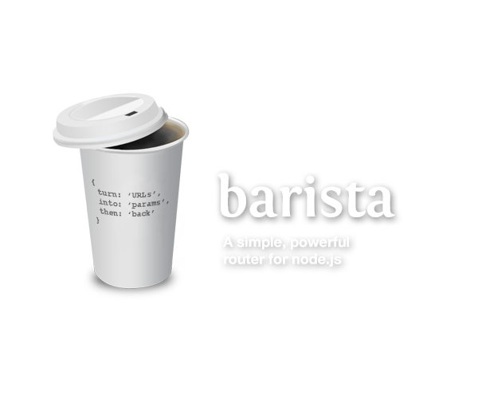
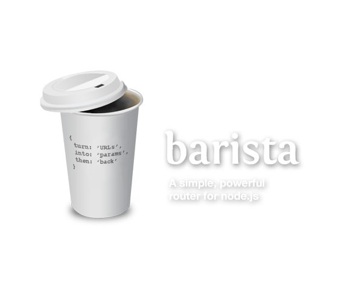

npm install barista
var Router = require('barista').Router , router = new Router
router.get( '/:beverage/near/:location(.:format)' ) .to( 'beverage.byLocation' )
router.first( '/coffee/near/90210', 'GET' )
 
